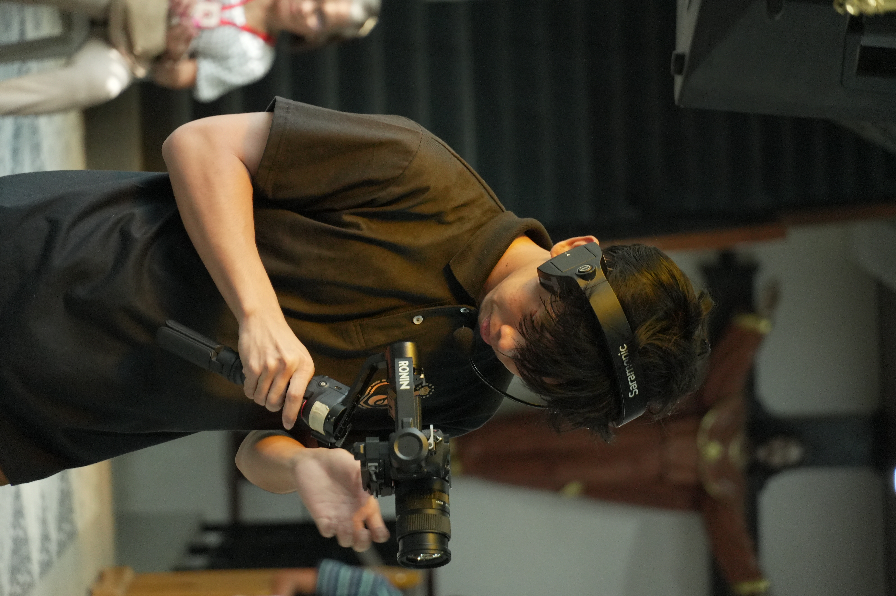
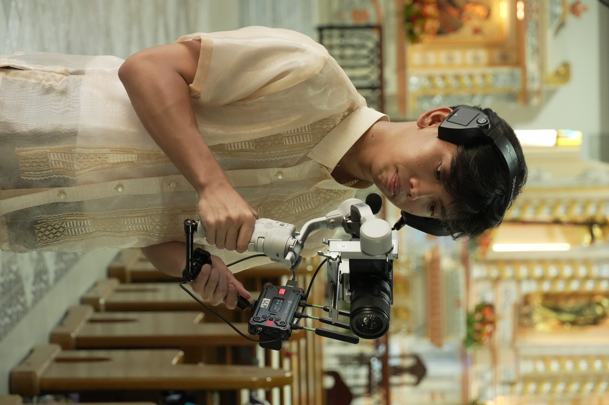
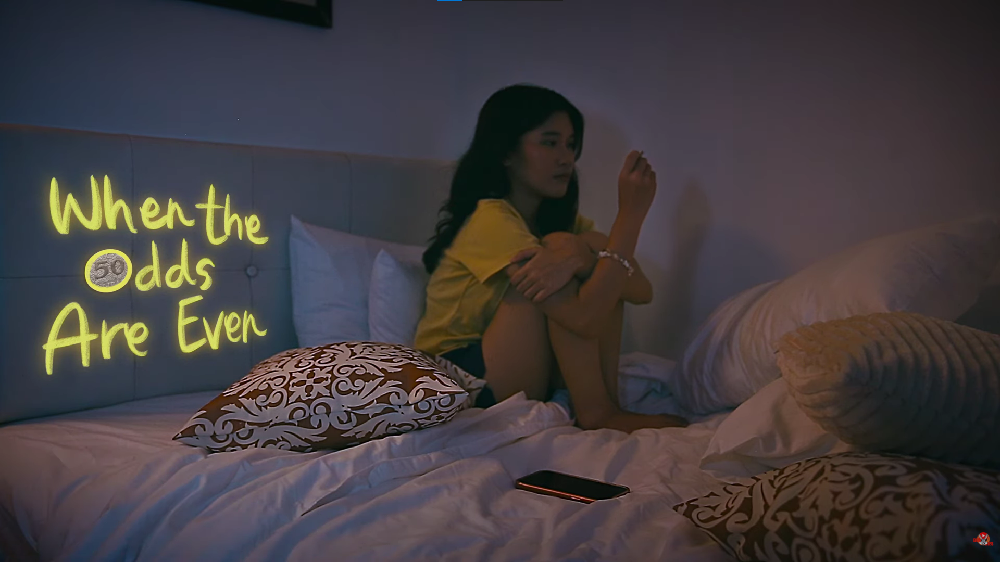
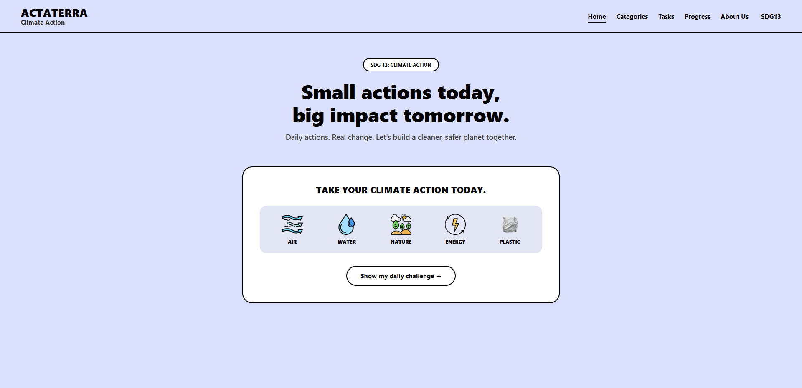

IT Student | Filmmaker
Bridging technical expertise and creative storytelling to build modern digital experiences and compelling visuals.
Get in TouchI am currently pursuing my Bachelor of Science in Information Technology with a specialization in Mobile and Web Applications at National University (NU Manila). My background is highly interdisciplinary, mixing rigorous technical training with creative media.
While focused on my IT degree, I'm also just an active student who loves getting involved in the creative community. I spend my free time attending various media organizations, collaborating with peers, and creating my own digital media and short films on the side.




Welcome to ActaTerra—your digital companion for everyday environmental action. We turn overwhelming global climate goals into simple, bite-sized daily tasks so you can build sustainable habits one step at a time.
View ProjectLet's collaborate on your next website or short film.